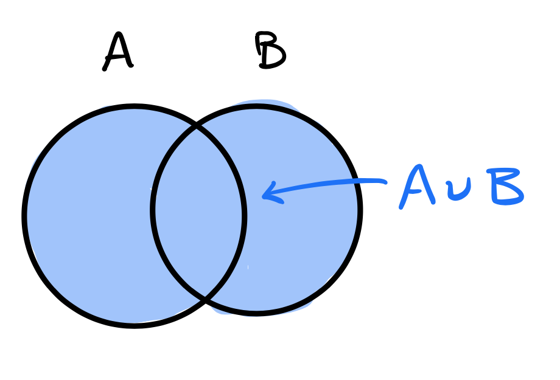
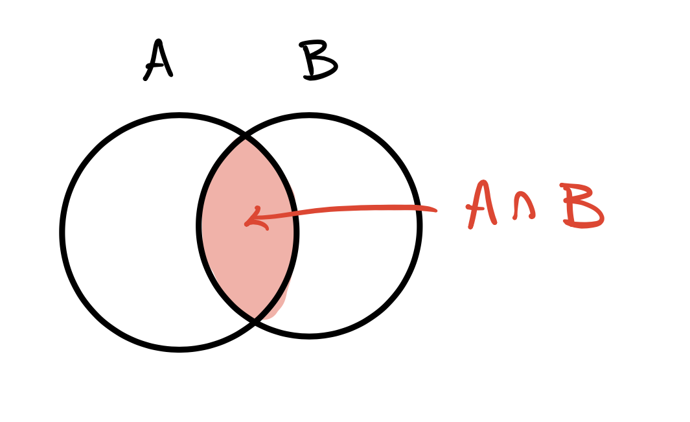
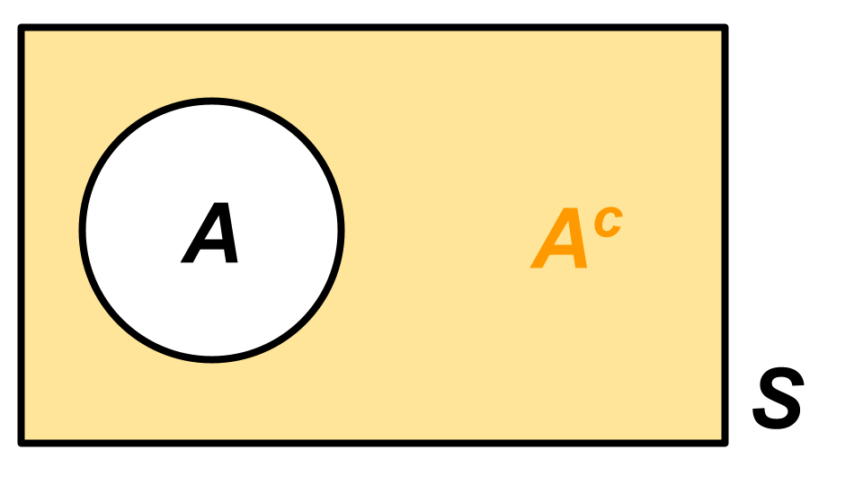
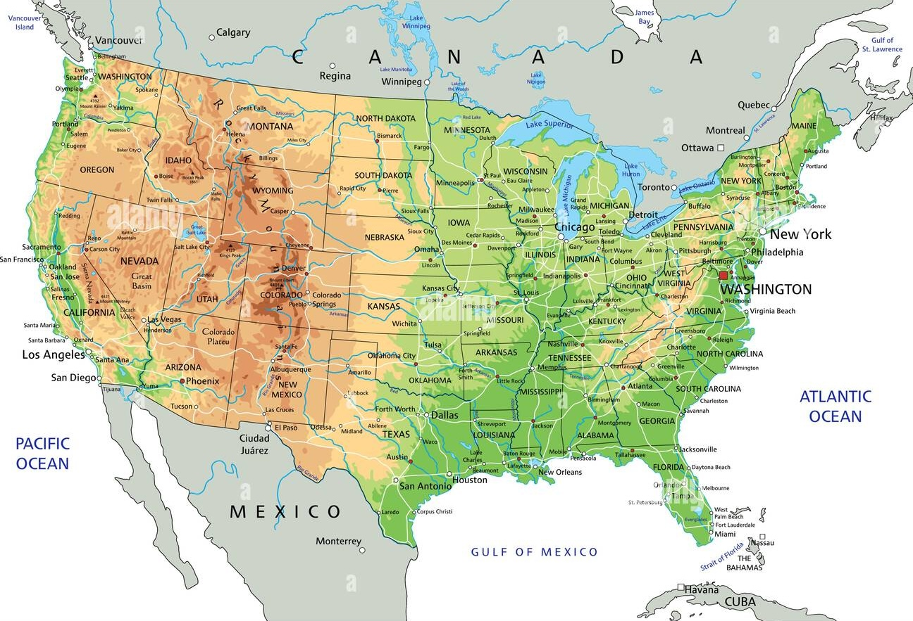

Probability for Statistical Inference
Duke University
STA 240 Fall 2025
| Mug | Name | Role | Office Hours |
|---|---|---|---|
| Hu, Yuang | TA | TBD | |
| Liu, Aurora | Head TA | WeTh 4:30 pm - 5:30 pm | |
| Ma, Liane | TA | Sun 10:00 am - 12:00 pm | |
| Zito, John | Instructor | Tue 3:00 pm - 6:00 pm |
Low stakes: worth fewer points than other problem sets;
It’s about an 8/10 on the math difficulty scale in this class;
You will not see much calculus in Weeks 1 - 6 and Midterm 1;
Serious calculus begins Week 7 and looms large until the end;
Bottom line
You have until Week 7 to work the kinks out. If, by that time, you are confident that you understand what’s happening on Problem Set 0, then you are ready.
Each has 10 problems following a “1 + 2 + 5 + 2” structure:
So, I lecture on new stuff MoWe, and you have to do two practice problems by that same Friday.
| Set | Picture | Logic |
|---|---|---|
| \(A\cup B\) |  | (inclusive) OR |
| \(A\cap B\) |  | AND |
| \(A^c\) |  | NOT |
\[ \begin{matrix} \text{Commutative} & A\cup B=B\cup A\\ & A\cap B=B\cap A\\ &\\ \text{Associative} & (A\cup B)\cup C = A\cup (B\cup C)\\ & (A\cap B)\cap C = A\cap (B\cap C)\\ &\\ \text{Distributive} & (A\cup B)\cap C = (A\cap C)\cup (B\cap C)\\ &(A\cap B)\cup C = (A\cup C)\cap (B\cup C)\\ &\\ \text{De Morgan's Laws} & (A\cup B)^c=A^c\cap B^c\\ & (A\cap B)^c=A^c\cup B^c. \end{matrix} \]
The set of possible outcomes of a random phenomenon:
| Phenomenon | Sample space \(S\) |
|---|---|
| Flip two coins in order | \(\{HH,\:HT,\:TT,\:TH\}\) |
| Roll a single die | \(\{1,\:2,\:3,\:4,\:5,\:6\}\) |
| Card dealt from a shuffled deck | \(\{2\clubsuit,\,3\clubsuit,\,4\clubsuit,\,\ldots\}\) |
| Winning party in US election | \(\{\text{R}, \text{D}, \text{L}, \text{G}, ..., \text{DSA}\}\) |
| Your blood sodium level in mEq/L | \(\mathbb{R}_+=(0,\infty)\) |
| # of insurance claims in a week? | \(\mathbb{N}\) |
| Return on a risky asset | \(\mathbb{R}\) |
A subset \(A\subseteq S\) of the sample space:
| Description | Event \(A\) |
|---|---|
| “the first of two coin flips is a head” | \(\{HH,\:HT\}\) |
| “the die is even” | \(\{2,\:4,\:6\}\) |
| “dealt a four” | \(\{4\clubsuit,\,4\heartsuit,\,4\spadesuit,\,4\diamondsuit\}\) |
| “right-wing party wins” | \(\{\text{R},\,\text{L},\,...\}\) |
| “blood sodium in healthy range” | \([133,\:145]\) |
| “over a thousand claims” | \(\{1001,\,1002,\,1003,\,\ldots\}\) |
| “your investment loses money” | \((-\infty,\:0)\) |
The sample space is the set of all (long, lat) coordinates in this spatial region:

| Symbol | Description |
|---|---|
| \(A\) | “Meteor lands in the United States” |
| \(B\) | “Meteor lands in Canada” |
| \(C\) | “Meteor lands in Mexico” |
| \(D\) | “Meteor lands in adjacent waters” |
| \(E\) | “Meteor lands in the Rocky Mountains” |
| Symbol | Description |
|---|---|
| \(A\) | “Meteor lands in the United States” |
| \(B\) | “Meteor lands in Canada” |
| \(C\) | “Meteor lands in Mexico” |
| \(D\) | “Meteor lands in adjacent waters” |
| \(E\) | “Meteor lands in the Rocky Mountains” |
“Meteor lands in the US or Canada”
→ \(A \cup B\)
“Meteor lands in Mexico or adjacent waters”
→ \(C \cup D\)
“Meteor lands in the Rocky Mountains or Canada”
→ \(E \cup B\)
“Meteor lands in North America”
→ \(A\cup B\cup C\)
| Symbol | Description |
|---|---|
| \(A\) | “Meteor lands in the United States” |
| \(B\) | “Meteor lands in Canada” |
| \(C\) | “Meteor lands in Mexico” |
| \(D\) | “Meteor lands in adjacent waters” |
| \(E\) | “Meteor lands in the Rocky Mountains” |
“Meteor lands in the Rocky Mountains and the US”
→ \(E \cap A\)
“Meteor lands in the US and Mexico”
→ \(A \cap C = \varnothing\)
“Meteor lands in North America and adjacent waters”
→ \((A \cup B \cup C) \cap D = \varnothing\)
| Symbol | Description |
|---|---|
| \(A\) | “Meteor lands in the United States” |
| \(B\) | “Meteor lands in Canada” |
| \(C\) | “Meteor lands in Mexico” |
| \(D\) | “Meteor lands in adjacent waters” |
| \(E\) | “Meteor lands in the Rocky Mountains” |
“Meteor does not land in the US”
→ \(A^c\)
“Meteor does not land in the Rocky Mountains”
→ \(E^c\)
“Meteor does not land on land at all”
→ \((A \cup B \cup C)^c = D\)
| Symbol | Description |
|---|---|
| \(G\) | “Meteor lands in Georgia” |
| \(S\) | “Meteor lands in The South” |
| \(U\) | “Meteor lands in the United States” |
| \(N\) | “Meteor lands in North America” |
Notice:
\[ G\subseteq S\subseteq U\subseteq N. \]
| Probability | Set theory |
|---|---|
| \(A\) or \(B\) occur | \(A\cup B\) |
| \(A\) and \(B\) occur | \(A\cap B\) |
| \(A\) does not occur | \(A^c\) |
| \(A\) implies \(B\) | \(A\subseteq B\) |
| \(A\) and \(B\) mutually exclusive | \(A\cap B=\varnothing\) |